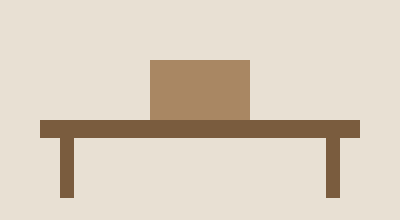

Fenwick & Sons
Furniture restoration in Providence since 1978. We repair, refinish and re-cane the pieces other shops turn away.
What we do
Structural repair on chairs and case goods, French polishing, veneer patching, and hand-caning. Most of what comes through the door is walnut, oak or cherry from the first half of the last century, and most of it leaves usable again.

How it works
Bring the piece by, or send photographs and measurements. We quote in writing before any work starts, and nothing gets stripped without your say-so. Turnaround runs four to six weeks in the busy season.